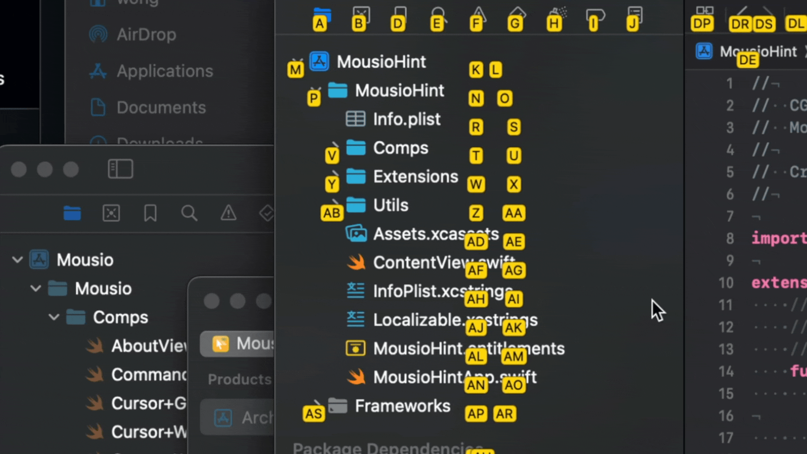
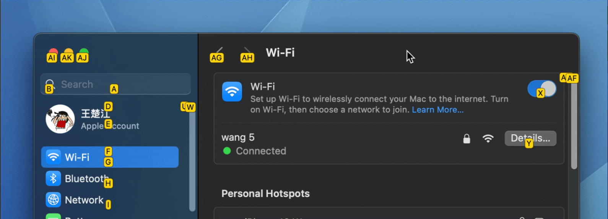
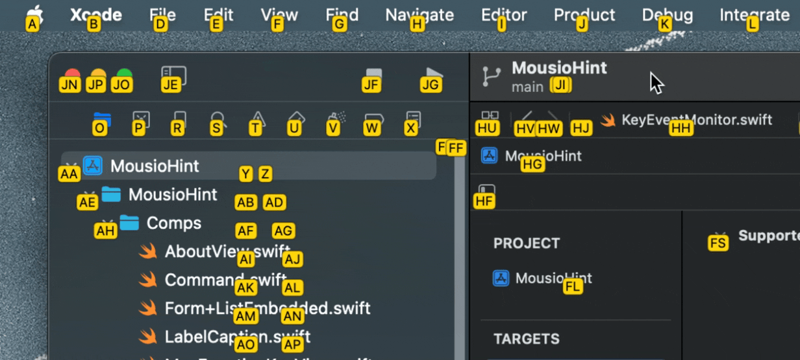

$ brew install --cask jaywcjlove/tap/mousio-hint


Mousio Hint 的核心功能是在屏幕上的界面元素旁生成 快捷键提示。借助这些提示，您可以仅使用键盘，快速将鼠标指针移动到目标位置，无需手动操作鼠标。
它可以作为 Mousio 的辅助增强工具，协同运行，旨在 通过键盘显著提升您的系统操作效率。
Mousio 主应用支持在沙盒模式下运行，但 Mousio Hint 因为需要访问并定位界面元素，所以无法在沙盒环境中正常使用。请注意，Mousio Hint 本质上是一个辅助定位工具，它通过设置与 Mousio 进行联动。

在某些应用程序中，如果系统无法完整获取所有界面元素，您可以直接使用 Mousio。在这种情况下，操作体验会更像在玩游戏，您可以精确控制鼠标光标的位置。
结合 Mousio 提供的以下强大功能：


您将能够实现几乎完全脱离鼠标的高效操作体验。